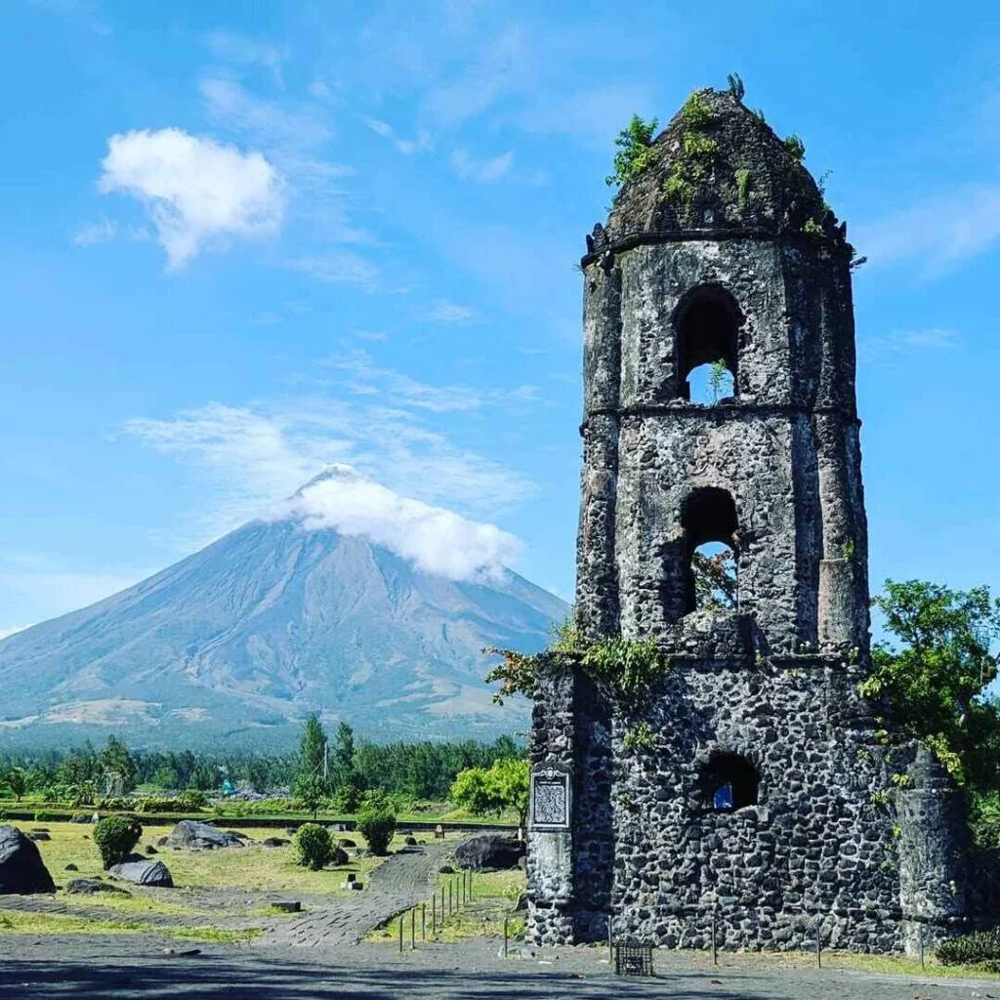

LUZON:

Location:intramuros manila
Description: Intramuros is a historic walled district in Manila, Philippines, known as the "Walled City," reflecting its Spanish colonial heritage and cultural significance.

Location:central luzon
Description:Like Dislike Central Luzon, or Region III, is the Philippines’ largest plain region,

Location:Mayon Volcano
Description:Mayon Volcano is a famous active volcano in the Philippines, known for its perfect cone shape.

Location:luzon
Description:Luzon is the largest and most populous island in the Philippines.

Location:luzon
Description:Luzon is the largest island in the Philippines and is home to the country's capital, Manila.